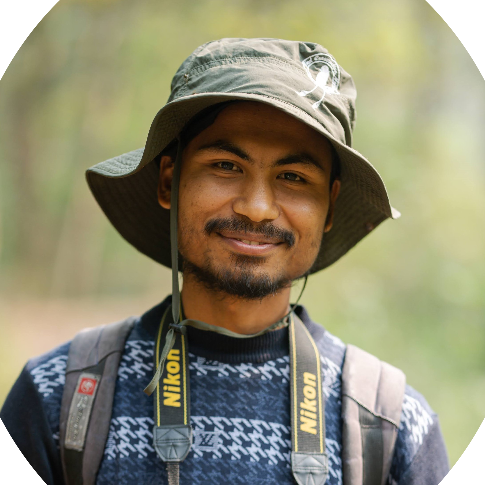

The Field Lens
Wildlife is best seen through the data it leaves behind. Follow my latest sightings across the HKH region.

Bridging the gap between wildlife field research and large-scale ecological modeling in the Hindu Kush Himalaya.

From monitoring Smooth-coated Otters in the Karnali River to managing the HKBIF portal at ICIMOD, my career has been dedicated to data-driven conservation.
I focus on integrating Indigenous knowledge with geospatial technology. As a PhD fellow in Beijing, I am currently exploring how to scale conservation efforts from individual species to entire transboundary ecosystems.
A multi-year study on the habitat variables of Lutrogale perspicillata in the Karnali River.
Read Paper →Camera trap evidence extending the known western range of the species to Jajarkot, Nepal.
View Evidence →Standardizing biodiversity data for the Hindu Kush Himalaya via the ICIMOD-hosted portal.
Project Link →My feature in The Himalayan Times explores the critical balance between community-managed conservation and the local risks of human-wildlife conflict.
Read ArticleWildlife is best seen through the data it leaves behind. Follow my latest sightings across the HKH region.